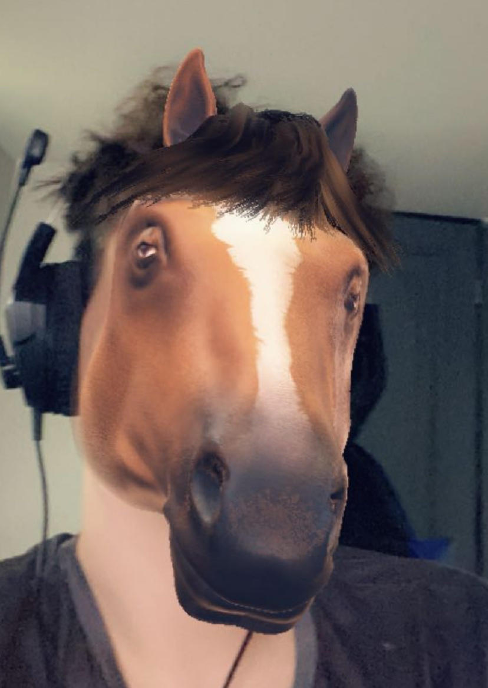
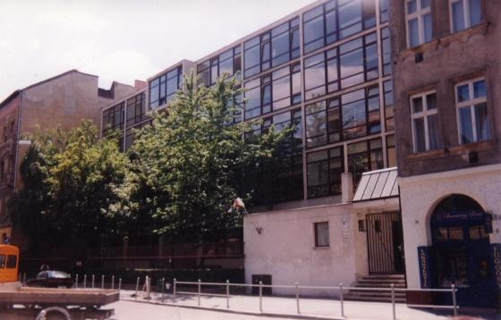
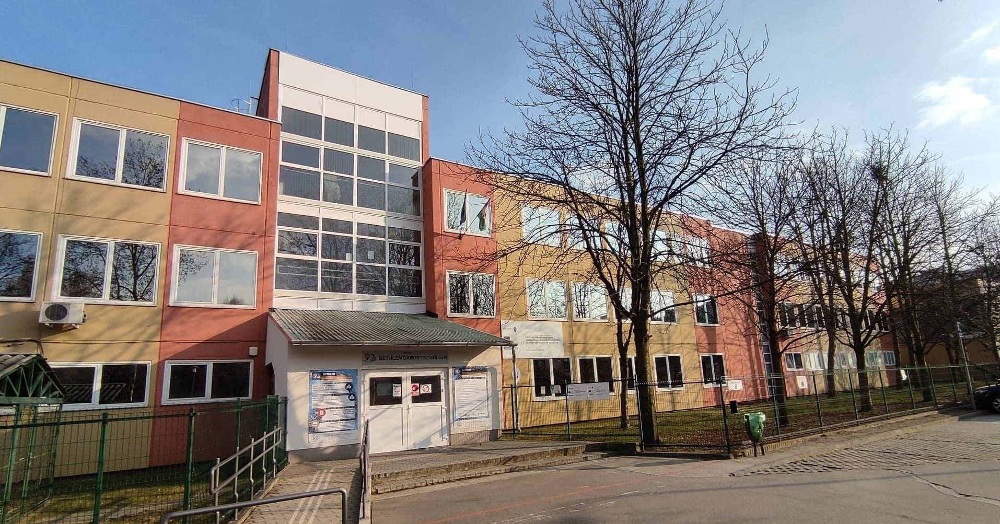

Adataimról
Hobbijaim
Mesélés a hobbijaimról
Önéletrajz

Adataim
-Nevem: Nagy Tamás Csaba
-Születési dátumom: 2009.05.13
-Születési helye:Budapest
-végzettség: 8 általános

-diák
-szak:informatika
-iskola: Bárdos Lajos általános iskola és gimnázium, Bethlen Gábor Technikum
